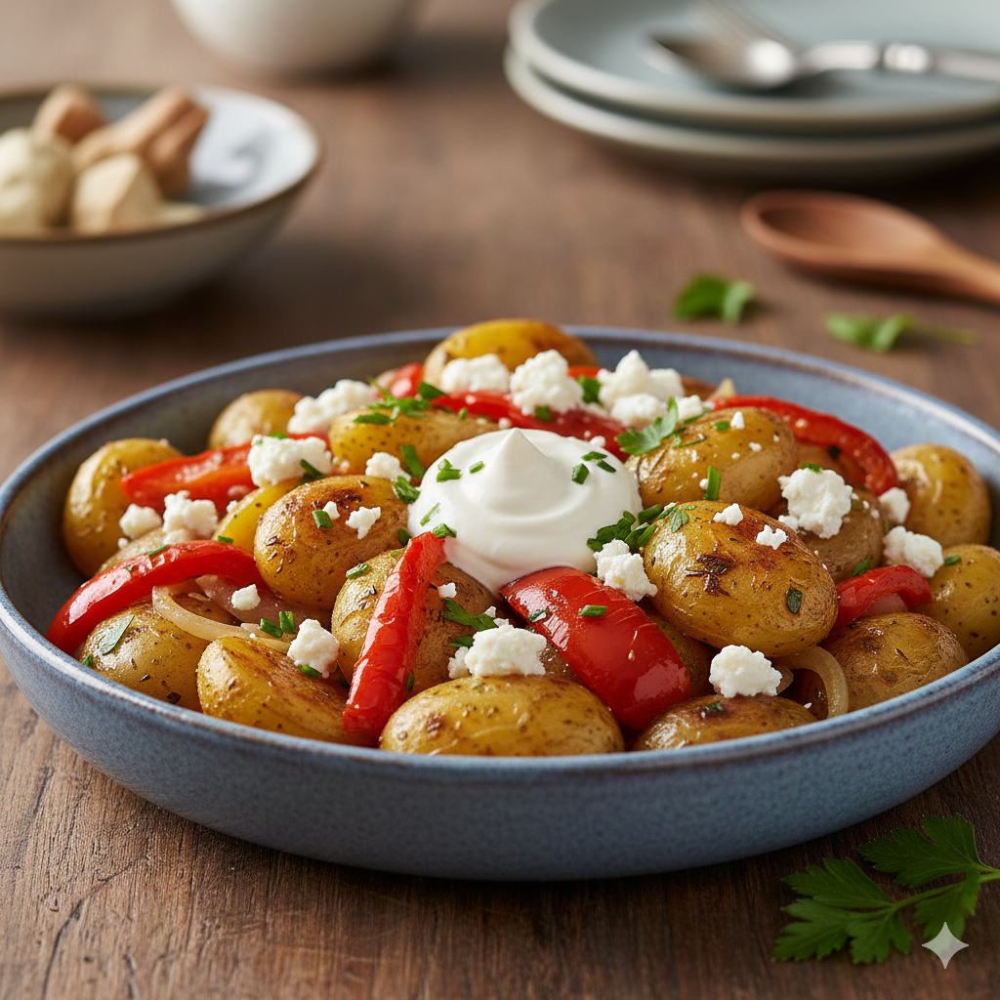

Kartoffelpfanne
 45 Min.
45 Min.
 simpel
simpel
 22.01.2026
22.01.2026
Zutaten
Zutaten für
| 400g Kartoffeln |
| 100g Feta Light |
| 0.5 Zwiebeln |
| 1 Rote Paprika |
| 1 EL ÖL |
| 1 EL Creme leicht |
| 2 Spiegeleier |
| Salz, Pfeffer, Gartenkräuter |
Zubereitung
ca. 15 Minuten
Gesamtzeit ca. 30 Minuten
Kartoffeln vierteln und in etwa 400ml Wasser mit Salz und Deckel köcheln lassen, bis das Wasser verdampft ist. Dann in etwas Öl anbraten, bis leicht braun. Paprika und Zwiebeln dazu. Zu letzt den Feta Light und mit Salz, Pfeffer, Gartenkräutern würzen. 2 Spiegeleier & fertig!
Rezept erstellt von
 Jan
Jan